No caseworker workload restriction. UJIVE controls: age FE, DI receipt (binary >0), N kids FE, ever-employed, household income (binned). Balance flag = 4 (has_tm1).
2026_05_spec1Caseworker workload ≥ 20 cases. UJIVE controls: age FE, N kids FE, ever-employed, household income (binned), DI amount (binned), total income (binned). Balance flag = 4 (has_tm1).
2026_06_spec4| Control / restriction | Spec 1 | Spec 4 | Note |
|---|---|---|---|
| Caseworker workload minimum | — | ≥ 20 cases | Drops noisy caseworkers with few cases (tighter sample) |
| Age FE | ✓ | ✓ | |
| N kids FE | ✓ | ✓ | |
| Ever-employed | ✓ | ✓ | |
| Household income (binned) | ✓ | ✓ | |
| DI receipt (binary > 0) | ✓ | — | Replaced by binned amount |
| DI amount (binned) | — | ✓ | More flexible (multiple bins instead of any/none) |
| Total income (binned) | — | ✓ | New control absorbing income-related selection |
Three substantive changes: tighter caseworker sample, finer-grained DI control, and an added total-income control. No changes to FE structure (both use the same office × year absorbing set in the UJIVE first stage and RF regressions).
amt and dur instruments separately.taxable_income,
employed_2g, inc_trans_scholarship, inc_trans_housing.muni_characteristics: Spec 4 wins 9/11 outcomes; Spec 1 has 7 outcomes
with significant pre-trends on geographic measures.grunnkrets_characteristics (neighborhood): Spec 4 wins 7/11.wealth_robustness: Spec 4 wins 5/9 (0 losses); Spec 1 has 0 wins.income_wealth: Spec 4 wins 3/6.amt_dur)Head-to-head winner for each outcome in the group. Score = 2 × #sig pre-coefs + max|t|/1.65. Lower is cleaner. A "tie" means scores within 0.2 of each other.
| Group | Spec 1 wins | Spec 4 wins | Ties | Winner |
|---|---|---|---|---|
| first_stage | 2 | 0 | 2 | Spec 1 |
| labor_taxable | 5 | 1 | 0 | Spec 1 |
| labor_earnings | 5 | 0 | 1 | Spec 1 |
| education_enrollment | 1 | 1 | 4 | tied |
| education_attainment | 0 | 1 | 1 | Spec 4 |
| income_wealth | 1 | 3 | 2 | Spec 4 |
| wealth_robustness | 0 | 5 | 4 | Spec 4 |
| transfers_main | 4 | 1 | 3 | Spec 1 |
| transfers_other | 2 | 1 | 1 | Spec 1 |
| mobility | 2 | 2 | 0 | tied |
| muni_characteristics | 1 | 9 | 1 | Spec 4 |
| grunnkrets_characteristics | 2 | 7 | 2 | Spec 4 |
| family | 2 | 1 | 6 | tied |
| TOTAL | 27 | 32 | 27 | Spec 4 |
amt_dur)For each spec's worst pre-trend outcomes, the comparison value on the other spec. Spec 1's worst offenders are all geographic; Spec 4 cleans them up nearly completely.
| Outcome | n_sig / max|t| | vs Spec 4 |
|---|---|---|
municipality_imm_share | 2 / 3.11 | 0 / 0.52 |
municipality_college | 2 / 2.78 | 0 / 0.87 |
has_college | 2 / 2.77 | 1 / 1.99 |
municipality_pop_density | 2 / 2.67 | 0 / 1.04 |
grunnkrets_imm_share | 2 / 2.46 | 0 / 0.44 |
municipality_age | 2 / 2.08 | 1 / 2.04 |
grunnkrets_pop_density | 1 / 2.95 | 1 / 1.79 |
married | 1 / 2.43 | 0 / 0.96 |
municipality_wealth_net | 1 / 2.38 | 0 / 0.33 |
municipality_highschool | 1 / 2.28 | 0 / 0.87 |
| Outcome | n_sig / max|t| | vs Spec 1 |
|---|---|---|
municipality_death_age | 2 / 2.77 | 1 / 1.77 |
any_sa_transfers | 2 / 2.26 | 0 / 0.19 |
employed_2g | 1 / 2.44 | 0 / 0.46 |
in_educ_or_work | 1 / 2.35 | 1 / 2.28 |
inc_trans_housing | 1 / 2.35 | 1 / 1.66 |
taxable_income | 1 / 2.33 | 0 / 0.63 |
inc_trans_scholarship | 1 / 2.25 | 0 / 0.86 |
municipality_welfare_dependent | 1 / 2.21 | 1 / 2.27 |
municipality_age | 1 / 2.04 | 2 / 2.08 |
inc_tot | 1 / 2.03 | 0 / 1.31 |
All figures are full-sample, three-instrument (amt × dur on top, amt and dur stacked below). Click any figure to zoom. The complete catalog (all groups × splits) is in the comparison dashboard.
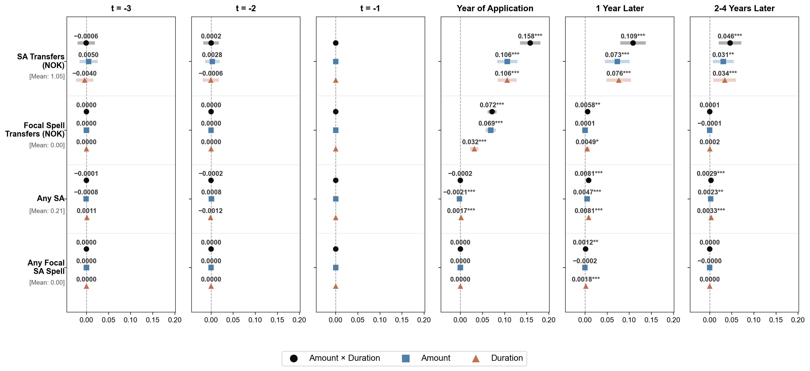
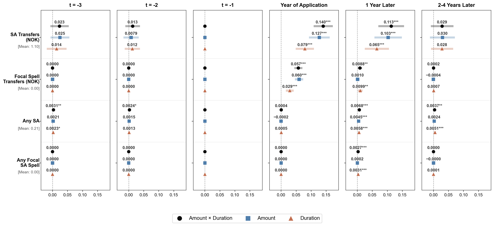
employed_taxable_1g turns positive and significant (+0.050**) vs. Spec 1's null (+0.011 ns).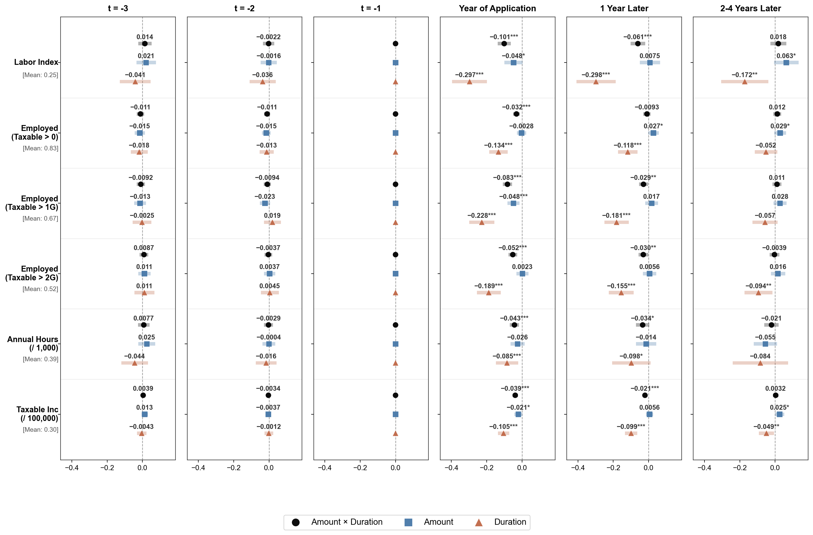
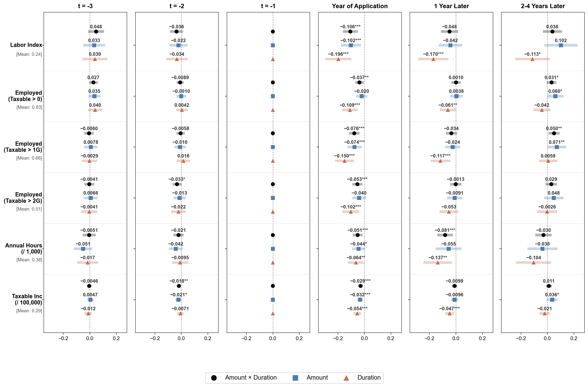
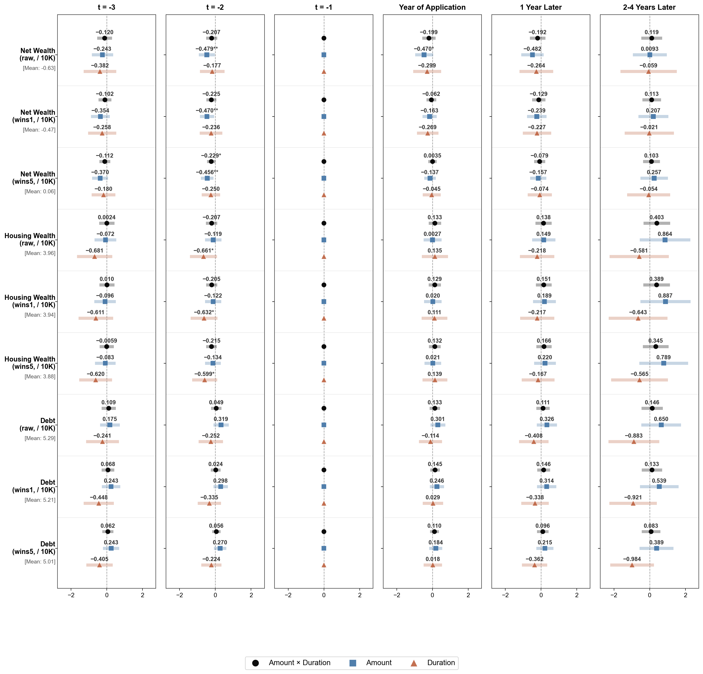
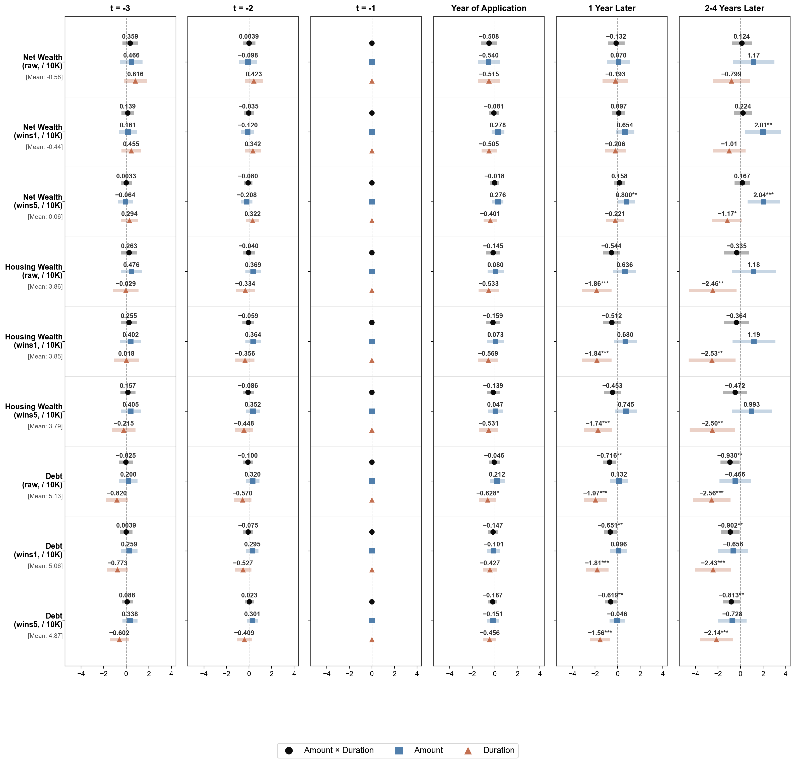
has_hs = −0.040*** and has_college = −0.026***.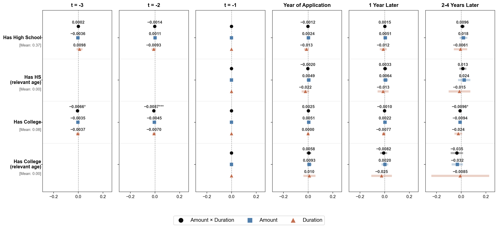
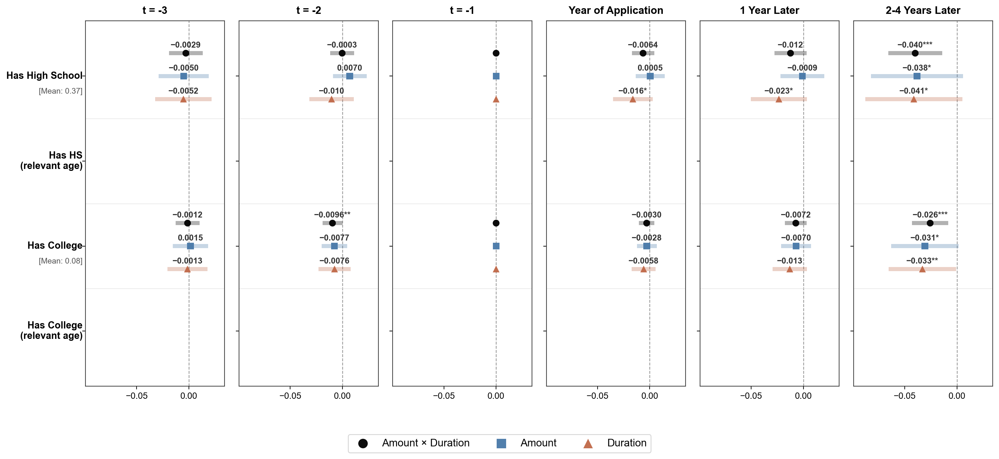
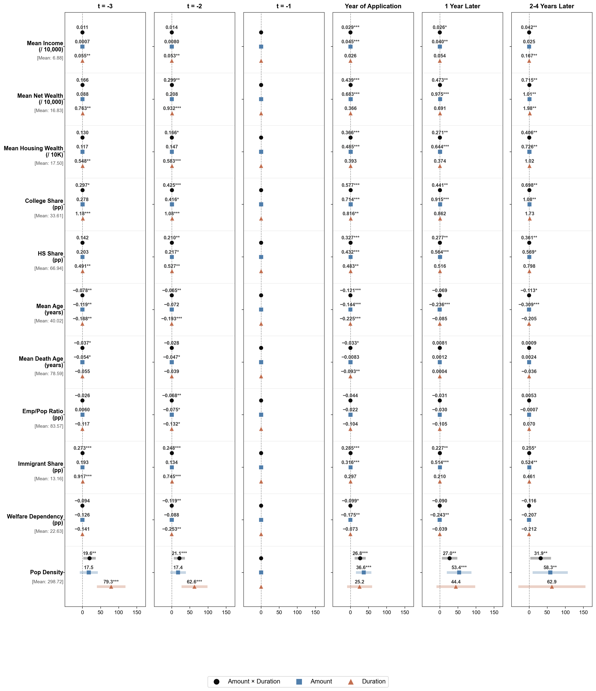
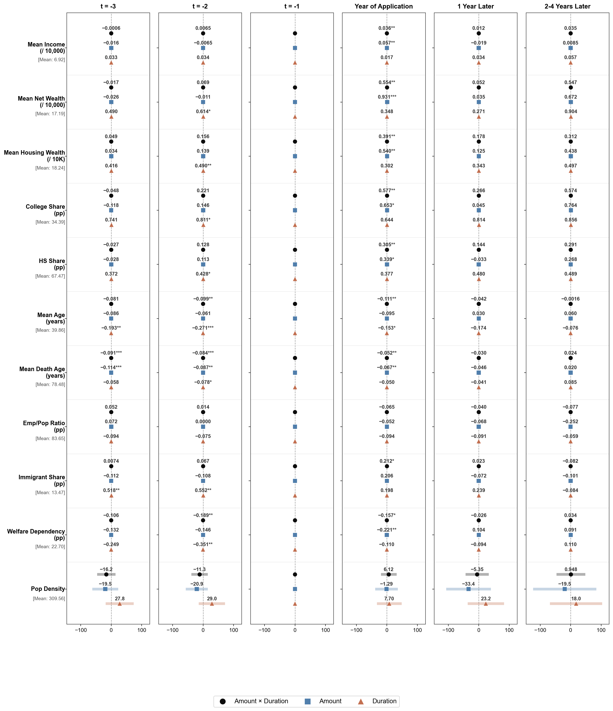
grunnkrets_imm_share, grunnkrets_college, grunnkrets_pop_density.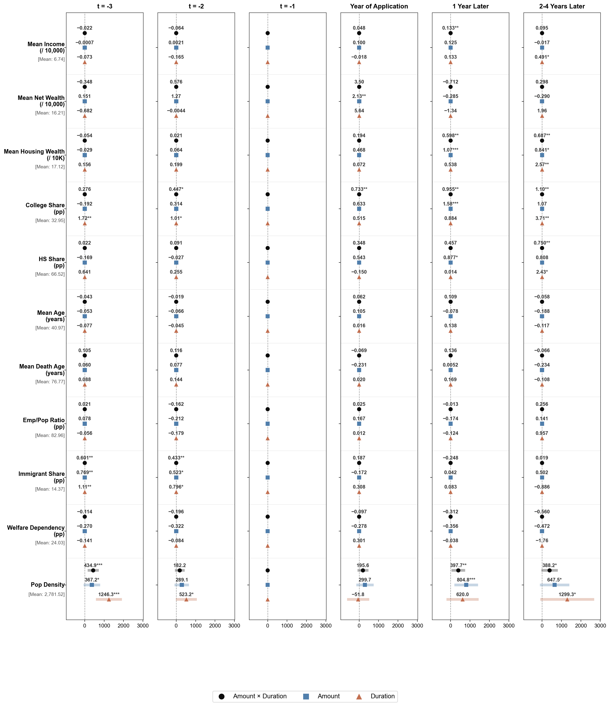
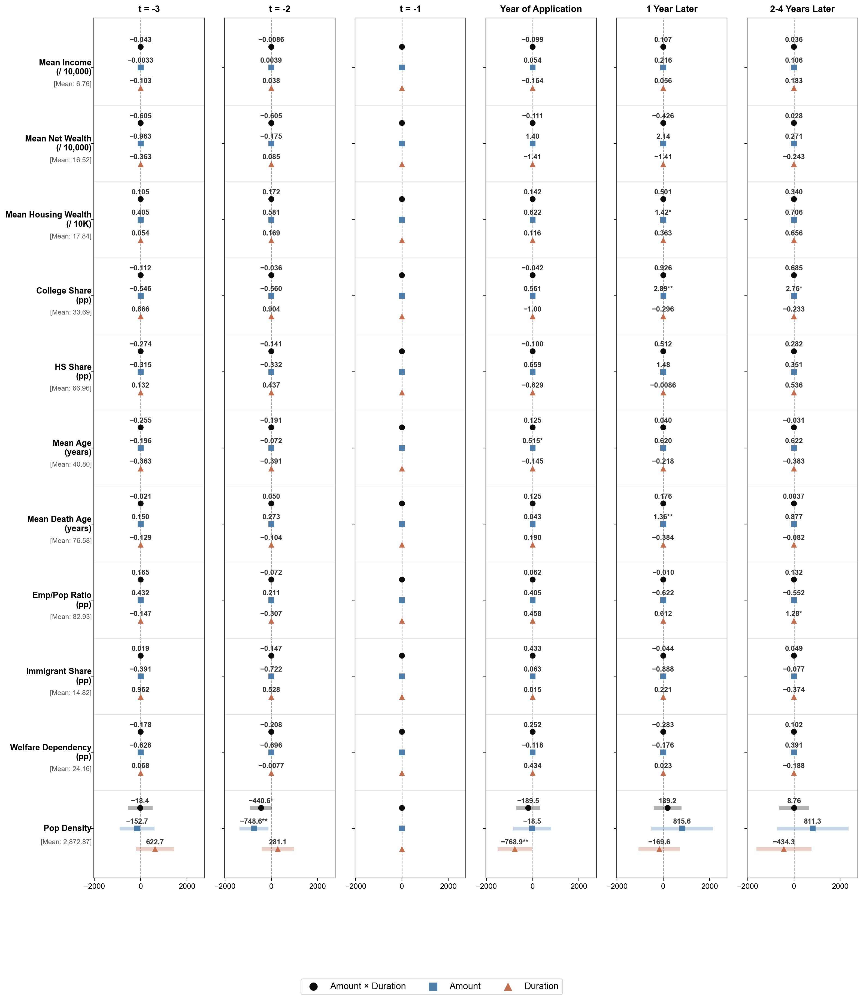
has_spouse, cohabitation, and union_cumulative all become significant at t=2 in Spec 4 (null in Spec 1).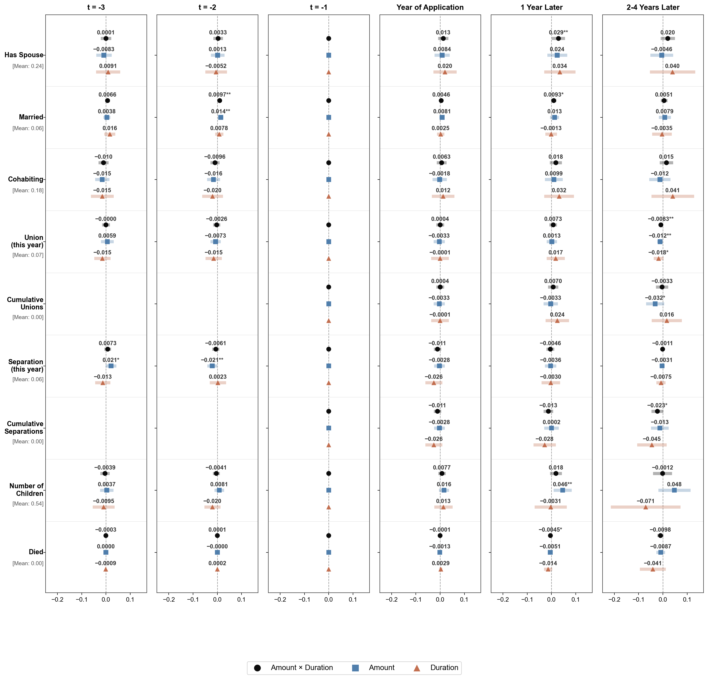
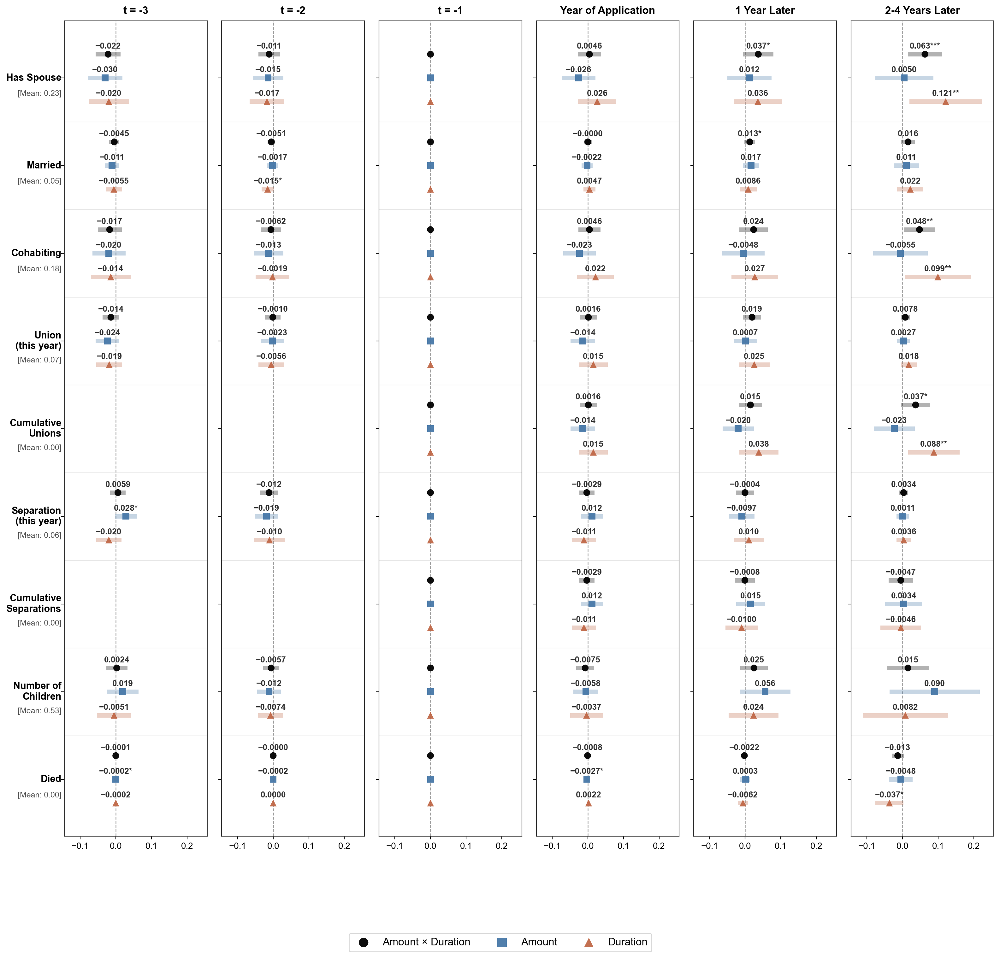
Spec 4 is cleaner overall and especially compelling for the geographic-effect story. The three changes that Spec 4 makes — tighter caseworker sample (≥20 cases), finer-grained DI control (binned amount instead of binary), and a new total-income binned control — are a coherent attempt to soak up income-related selection that Spec 1's coarser controls miss.
Why this likely cleans up geographic pre-trends: SA recipients are systematically lower-
income, and lower-income households cluster in lower-income municipalities and neighborhoods.
If income controls are too coarse (binary DI, no total-income control), residual income
variation correlates with geographic measures, generating spurious "geographic upgrading"
findings and spurious pre-period coefficients on the same geographic variables. Spec 4's
binned income controls absorb that residual variation, which is consistent with the dramatic
pre-trend cleanup we see for muni_* and grunnkrets_* outcomes
(max|t| dropping from ~3 to under 1 on several variables).
The trade-off is small: Spec 4 introduces a handful of new mild pre-trend failures in
individual labor and transfer outcomes (max|t| around 2.0–2.4) but these are far fewer in number
and smaller in magnitude than the geographic pre-trends Spec 4 cleans up. The pattern is robust
across all three instruments (amt_dur, amt, dur).
Implication for the headline findings: The novel results that Spec 4 produces — large negative debt effects, persistent education attainment losses, positive long-run family formation — become more credible knowing that Spec 4 also has cleaner pre-trends for those outcome groups. The "geographic upgrading" channel from Spec 1 should be re-interpreted with caution given that Spec 1's geographic outcomes have demonstrably worse pre-trends, which the finer income controls in Spec 4 plausibly resolve.